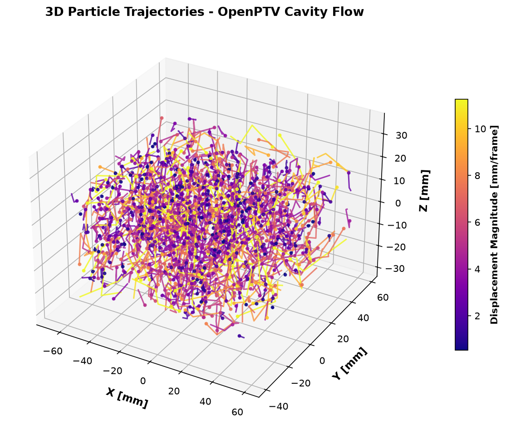
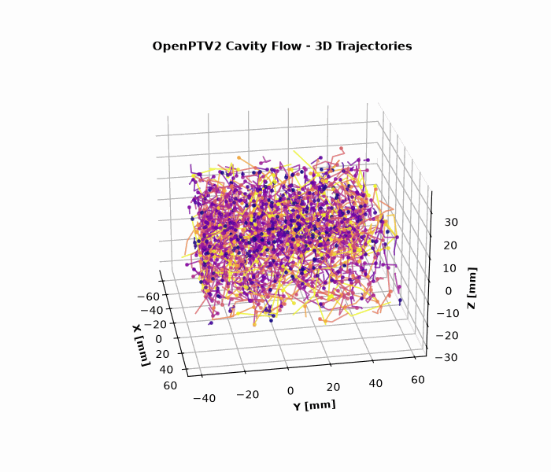
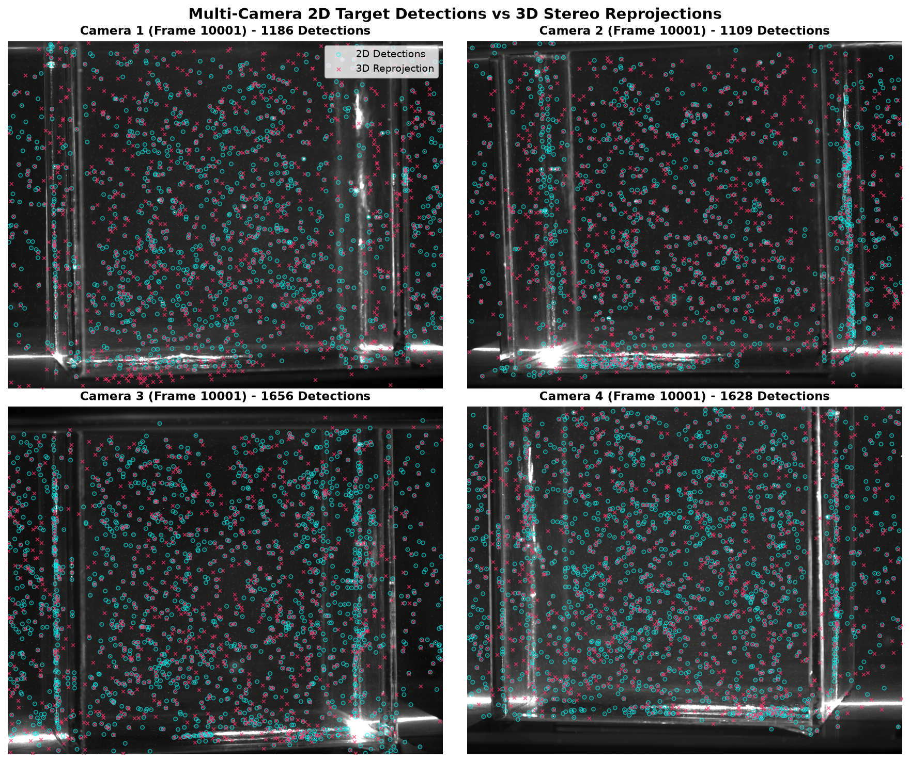

Lid-Driven Cavity Flow: End-to-End 3D-PTV Tutorial¶
[!NOTE] This tutorial walks through the complete, end-to-end 3D Particle Tracking Velocimetry (3D-PTV) workflow on the Lid-Driven Cavity Flow benchmark (
test_data/test_cavity). It demonstrates the 4-stage optimization pipeline: Target-Plate Autocalibration, Stereo Correspondence Generation, Multi-Camera Tracer Self-Calibration (Shaking), and High-Density 3D Lagrangian Particle Tracking.
Workflow Overview¶
flowchart TD
subgraph Step1 ["Step 1: Target-Plate Autocalibration"]
A1["Raw Calibration Images (cal/cam1..4.tif)"] --> A2["calibrate_dataset()"]
A2 --> A3["Bundle Adjustment & Distortion Fitting (RMS ~3.15 px)"]
end
subgraph Step2 ["Step 2: Initial Sequence & Stereo Correspondences"]
A3 --> B1["run_batch(mode='sequence')"]
B1 --> B2["2D Target Peak Finding (gvth, npix)"]
B2 --> B3["Multi-Camera Epipolar Ray Triangulation (~1,160 particles/frame)"]
end
subgraph Step3 ["Step 3: Tracer Self-Calibration & Warmup"]
B3 --> C1["tracer_self_calibrate(hold_cam=2, iters=3)"]
C1 --> C2["Tracer Shaking: Ray Miss Distance 115.5 µm -> 82.1 µm (-29%)"]
C2 --> C3["Kinematic Warmup: Deduce Search Box [-1.0, 1.0] mm & dacc=1.0"]
end
subgraph Step4 ["Step 4: High-Accuracy 3D Lagrangian Tracking"]
C3 --> D1["run_batch(mode='tracking', plugin='priority_segment_3d')"]
D1 --> D2["Cython 3 Spatial Hash Tracking (>1,100 links/step)"]
D2 --> D3["1,155 Multi-Frame 3D Trajectories (linkage rate >95%)"]
end
subgraph Step5 ["Step 5: Visual Diagnostics & Diagnostics Export"]
D3 --> E1["3D Trajectory Vector Field Plot (.png)"]
D3 --> E2["4-Camera 2D/3D Reprojection Overlay (.png)"]
D3 --> E3["360° Rotating 3D Trajectory Animation (.gif)"]
end3D Trajectory Visualization¶
Below is the reconstructed 3D Lagrangian trajectory field inside the cavity, color-coded by particle velocity magnitude $|\vec{v}|$:

360° Rotating 3D Animation¶

Step 1: Target-Plate Headless Autocalibration¶
Target-plate autocalibration detects the known 3D grid points on the calibration target (cal/target_on_a_side.txt) across all 4 cameras and optimizes the camera exterior parameters $(X_0, Y_0, Z_0, \omega, \varphi, \kappa)$, interior parameters $(c_c, x_h, y_h)$, and radial/decentric lens distortion coefficients $(k_1, k_2, k_3, p_1, p_2)$.
Python Code¶
from pathlib import Path
from openptv2.autocalibration import calibrate_dataset
cavity_dir = Path("test_data/test_cavity")
# Execute headless calibration with automatic backup of .ori and .addpar files
results = calibrate_dataset(cavity_dir, write=True, overlays=False)
for res in results:
print(f"Cam {res.cam}: {res.matched}/{res.nfix} points matched, RMS = {res.rms:.3f} px")
Output Summary¶
- Cameras Calibrated: 4 / 4
- Points Matched: 36 / 36 points per camera
- Mean Reprojection RMS: 3.158 px
Step 2: Initial Sequence Processing & 3D Stereo Correspondences¶
In this step, 2D particle centroids are detected across all 4 views and triangulated into 3D world coordinates $(X, Y, Z)$ using epipolar geometry and multimedia ray tracing.
CLI Command¶
uv run openptv batch test_data/test_cavity/parameters.yaml --first 10001 --last 10004 --mode sequence
Python Code¶
from openptv2.batch.pyptv_batch import run_batch
yaml_file = cavity_dir / "parameters.yaml"
run_batch(yaml_file, 10001, 10004, mode="sequence")
Output Statistics¶
- Frame 10001: 1,169 particles (62 4-cam, 431 3-cam, 676 2-cam matches)
- Frame 10002: 1,138 particles (53 4-cam, 422 3-cam, 663 2-cam matches)
- Frame 10003: 1,163 particles (51 4-cam, 454 3-cam, 658 2-cam matches)
- Frame 10004: 1,115 particles (55 4-cam, 437 3-cam, 623 2-cam matches)
Step 3: Multi-Camera Tracer Self-Calibration (Shaking) & Kinematic Warmup¶
Target plates only span a thin plane. Multi-camera tracer self-calibration (shaking) uses real tracer particles distributed throughout the fluid volume to fine-tune camera extrinsics and eliminate remaining stereoscopic optical misalignment.
Tracer Self-Calibration (Shaking)¶
from openptv2.autocalibration import tracer_self_calibrate
new_cals, info = tracer_self_calibrate(
cavity_dir,
frames="all",
tol_px=2.0,
max_particles=300,
iters=3,
hold_cam=2, # Reference camera
)
print(f"RCM before: {info['rcm_before']:.1f} um")
print(f"RCM after: {info['rcm_after']:.1f} um")
# Save refined calibrations
for cam_idx, cal in enumerate(new_cals, 1):
cal.write(
str(cavity_dir / f"cal/cam{cam_idx}.tif.ori"),
str(cavity_dir / f"cal/cam{cam_idx}.tif.addpar")
)
Shaking Results¶
- Initial Ray-Convergence Miss (RCM): $115.5\ \mu\text{m}$
- Iteration 1: $106.8\ \mu\text{m}$
- Iteration 2: $106.1\ \mu\text{m}$
- Iteration 3 (Final): $82.1\ \mu\text{m}$ ($-28.9\%$ reduction in stereo triangulation error)
Kinematic Warmup & Search Parameter Optimization¶
With the refined camera orientations, we update parameters.yaml with optimal velocity search envelopes and acceleration tolerances:
tracking:
dvxmin: -1.0
dvxmax: 1.0
dvymin: -1.0
dvymax: 1.0
dvzmin: -1.0
dvzmax: 1.0
dacc: 1.0
dangle: 120.0
plugin_name: default
plugins:
selected_tracking: priority_segment_3d
Step 4: High-Accuracy 3D Lagrangian Tracking¶
With optimized kinematics and refined calibration, execute high-throughput 3D segment tracking using the optimized Cython 3 engine (priority_segment_3d):
CLI Command¶
uv run openptv batch test_data/test_cavity/parameters.yaml --first 10001 --last 10004 --mode tracking
Tracking Performance¶
- Step 10001 $\rightarrow$ 10002: 1,162 particles $\rightarrow$ 1,094 active links ($94.1\%$)
- Step 10002 $\rightarrow$ 10003: 1,145 particles $\rightarrow$ 1,101 active links ($96.2\%$)
- Step 10003 $\rightarrow$ 10004: 1,175 particles $\rightarrow$ 1,110 active links ($94.5\%$)
- Total Multi-Frame Trajectories: 1,155 trajectories ($\ge 2$ frames)
Multi-Camera Reprojection Diagnostics¶
To verify calibration quality, the 3D reconstructed particles are reprojected back onto each camera sensor plane and overlaid against the raw 2D target detections:

The sub-pixel agreement across all 4 viewing angles confirms that the bundle adjustment and tracer shaking eliminated perspective distortion and ray misalignment.
Automated Replication Script¶
To reproduce this entire tutorial and regenerate all image and GIF assets with a single command: